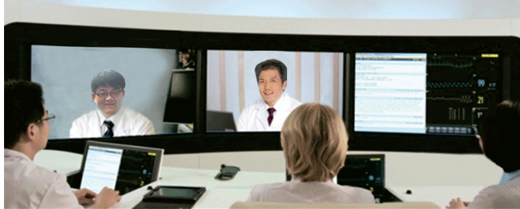

In China, the healthcare resources are distributed badly uneven, most of top and experienced healthcare located in Beijing, Shanghai or other big cities. It’s quite difficult for remote patients reach to the advanced medicare.
GATelem Platform integrates 4 levels of hospitals/medical institutions, which are: advanced international hospitals; the Grade A Chinese hospitals (located in Beijing，Shanghai，etc); provincial capital hospitals & medical institutions; and hospitals & medical institutions in city/towns.
With the platform, remote patient can not only get consultations from experts in top hospitals/medical institution, but also reduce the need for outpatient visits and enable remote prescription verification and drug administration, potentially significantly reducing the overall cost of medical care via tele-consultation.
GATelem ?makes a long-term cooperation with a lot of primary/community hospitals, helps them in remote area set up the remote clinics (Tele-clinics), and combined it together with their routine clinic and outdoor patient diagnosis and treatment system. This not only makes the tele-consultation more flexible and efficient, but also creates a much wider telemedicine usage to differentiate the platform from other telemedicine services.
All of tele-clinics have the most advanced digital examination camera and e-divices, together with the secure data management in the platform, makes the tele-diagnosis and treatment safe and reliable.
The ECG monitoring platform can be 24 hours to monitor the patient's medical conditions, it can ensure that find problems immediately to fight more rescue time for pateints. GATelem cooperates with emergency department of hospitals, connect patients’ monitoring between their regulor life to hospital when the urgent event happens.
GATelem platform helps some primary hospitals/clinics in remote area set up the remote clinics (Tele-clinics), and combined it together with their routine clinic and outdoor patient diagnosis and treatment system. This not only makes the tele-consultation more flexiable and efficient, but also creates a much wider telemedicine usage to differentiate the platform from other telemedicine survices.
At present, our tele-medical consultation center has been involved in most of medical departments, such as: internal medicine-neurology、neurosurgery、 department of rehabilitation、internal medicine-cardiovascular department、urology Surgery、orthopaedics 、imaging department、department of respiration、hepatic surgery、internal medicine-oncology、 gynaecology 、 paediatrics 、etc. Patients from remote areas can get better treatment and doctors in primary hospitals can get more training. Overall, it’s the most practical way to carry on the hierarchical medical system in China.